Bøker
Her finner du den fullstendige bibliografien til Ingar Knudtsen (1944–2025): 30 unike bøker mellom 1975 og 2008 — romaner, ungdomsromaner, novellesamlinger og kortromaner innen science fiction, fantasy, magisk realisme, skrekk og politiske krigsromaner. I tillegg finnes fire danske utgivelser, én EPUB-utgave, to gratis PDF-utgaver og fire norske lydbøker. Flere av bøkene har også kommet i nye utgaver og opplag; disse er ikke talt med her. Mest kjent er Amasone-serien på fem bøker, som startet som en trilogi. Noveller av Knudtsen er også oversatt til tysk, fransk og engelsk i utenlandske antologier og magasiner.
Les bøkene til Ingar Knudtsen gratis på Nasjonalbiblioteket →
Amasonebøkene
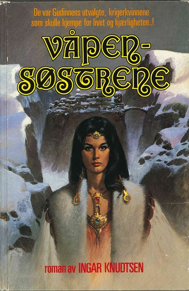
Våpensøstrene
1987
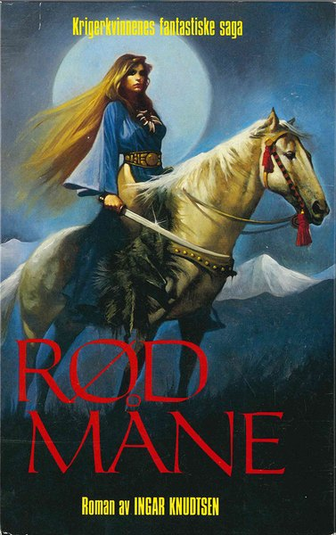
Rød måne
1989
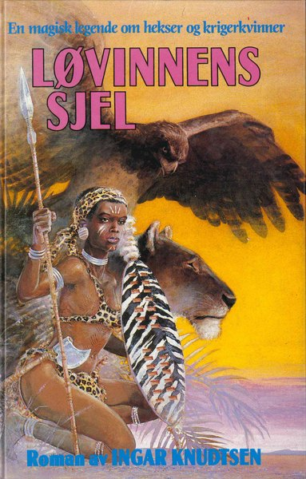
Løvinnens sjel
1990
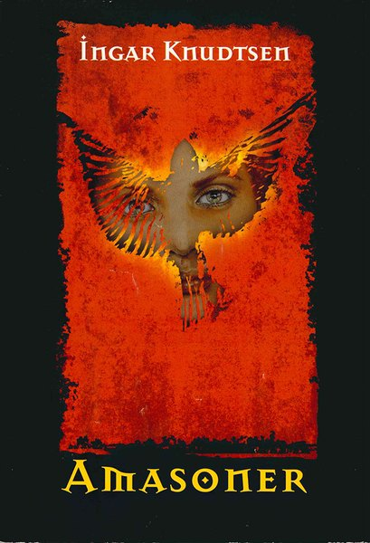
Amasoner
2001
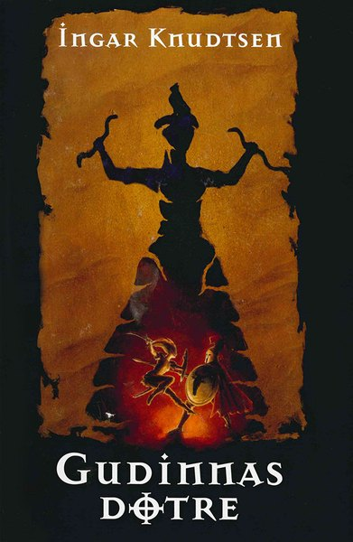
Gudinnas døtre
2002
Politiske romaner og krigsromaner

Nord for Saigon
1992
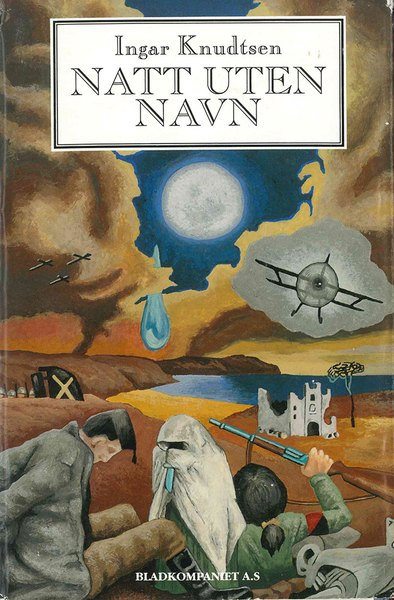
Natt uten navn
1996
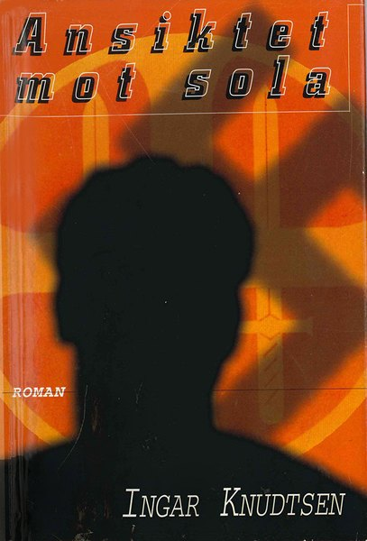
Ansiktet mot sola
1997
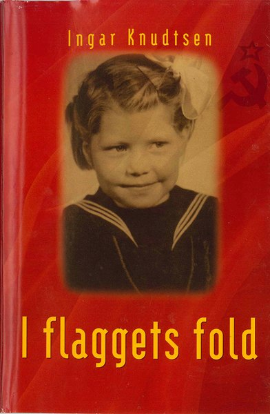
I flaggets fold
1998
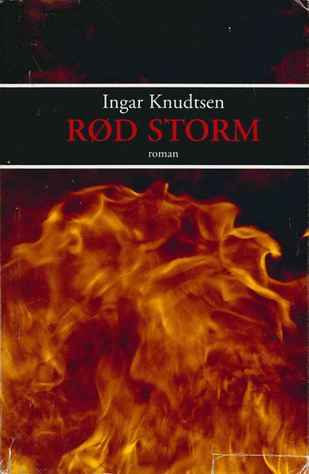
Rød storm
2003
Ungdomsromaner

Tyrannosaurus Rex
1978

Tova
1979

Reisen til Jorda/Rejsen til Jorden
1981

Katteliv
1985

Havheksen
1993

Gjenferdet
2002

Tyrannosaurus Rex – PDF-utgaven
2008
Andre romaner

Kalis sang
1991

Skumringslandet
1993
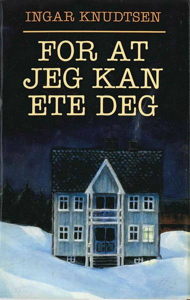
For at jeg kan ete deg
1995
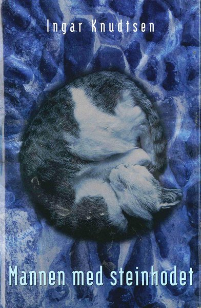
Mannen med steinhodet
1999

Nekromantiker
2004
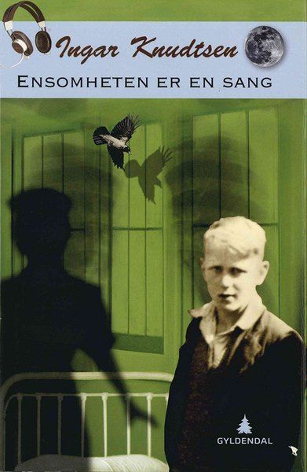
Ensomheten er en sang
2008
Novellesamlinger og kortromaner

Dimensjon S
1975

Under ulvemånen
1975

Jernringen
1976

Lasersesongen
1977

Operasjon Ares
1984

Pandoras planet
1986

Tryllekunst
1987

Dimensjon S – EPUB-utgaven
2012
Danske utgivelser

Kampen om Mars
1981
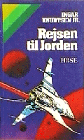
Rejsen til Jorden
1982
Havheksen: en sørøver-roman
1994

Genfærdet
1995